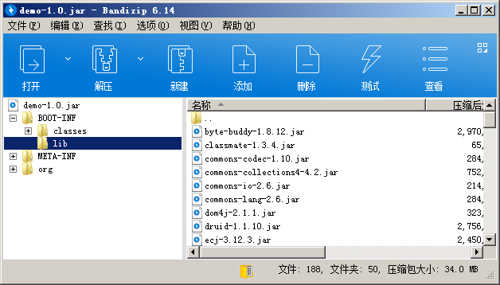
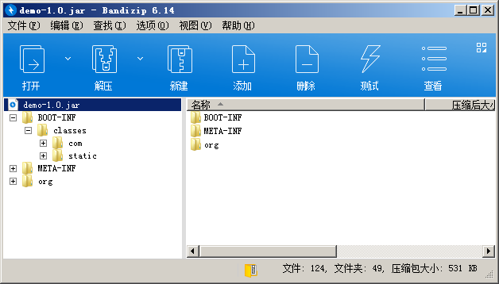

SpringBoot 工程若用简单的 clean package 命令打包会包含所有依赖 jar 包，如果工程依赖比较多的时候，打的包通常动不动就几十 m 大。这使得在部署到远程的时候，如果你的网络是小水管的就要传半天了，而且上微服务的项目，多个工程，一个工程还多台机器，更新部署需要浪费许多时间。
SpringBoot 启动可以以加载外部依赖目录来启动工程，所以我不必每次打包都包含一堆 jar 包，只需要把 jar 统一放一个目录，启动时指定依赖目录启动就行。
在网上搜索各类资料和博客，大多以下方式打包。
以 maven 打包为例，使用 SpringBoot 打包插件先正常打包
1
2
3
4
5
6
7
8
9
10
11
12
13
14
15
16
17
18
19
20
21
22
23
24
25
26
27
28
| <build>
<plugins>
<plugin>
<groupId>org.springframework.boot</groupId>
<artifactId>spring-boot-maven-plugin</artifactId>
<configuration>
<layout>ZIP</layout>
<includes>
</includes>
</configuration>
</plugin>
</plugins>
<resources>
<resource>
<directory>src/main/resources</directory>
<includes>
<include>**/**</include>
</includes>
<filtering>false</filtering>
</resource>
</resources>
</build>
|
打包后的目录结构，将 lib 目录的依赖包拷贝出来上传到服务器，依赖一般很少改动，若依赖改变重新传一次

打开 include nothing 的配置注释重新打包
1
2
3
4
| <include>
<groupId>nothing</groupId>
<artifactId>nothing</artifactId>
</include>
|
打包后的文件，很小了，不用每次部署都传大文件

另外也可以直接用 maven maven-dependency-plugin 插件直接把 jar 包拷贝到目标目录，不需要去包里拷贝，更直接
1
2
3
4
5
6
7
8
9
10
11
12
13
14
15
16
17
18
19
20
21
22
23
24
25
26
27
28
29
30
31
32
33
34
35
36
37
38
39
40
41
42
43
44
45
46
47
48
49
50
51
| <build>
<plugins>
<plugin>
<groupId>org.springframework.boot</groupId>
<artifactId>spring-boot-maven-plugin</artifactId>
<configuration>
<layout>ZIP</layout>
<includes>
<include>
<groupId>nothing</groupId>
<artifactId>nothing</artifactId>
</include>
</includes>
</configuration>
</plugin>
<plugin>
<groupId>org.apache.maven.plugins</groupId>
<artifactId>maven-dependency-plugin</artifactId>
<executions>
<execution>
<id>copy-dependencies</id>
<phase>package</phase>
<goals>
<goal>copy-dependencies</goal>
</goals>
<configuration>
<type>jar</type>
<includeTypes>jar</includeTypes>
<includeScope>runtime</includeScope>
<outputDirectory>
${project.build.directory}/lib
</outputDirectory>
</configuration>
</execution>
</executions>
</plugin>
</plugins>
<resources>
<resource>
<directory>src/main/resources</directory>
<includes>
<include>**/**</include>
</includes>
<filtering>false</filtering>
</resource>
</resources>
</build>
|
启动指定 lib 目录，java -Dloader.path=/app/demo/lib -jar demo-*.jar
以发行包和 lib 依赖目录都在 /app/demo 目录下为例，启动的参考脚本，jvm 及其他参数自行加上，注意你的进程名，别把其他进程也 kill 了
1
2
3
4
5
6
7
8
9
10
11
12
13
14
15
16
17
18
19
20
21
22
23
24
25
26
27
28
29
30
31
32
33
34
35
| #!/bin/sh
workdir=/app/demo
start() {
cd $workdir
nohup java -Dloader.path="lib/" -Xms512m -Xmx1024m -jar demo-*.jar > demo.out 2>&1 &
echo "demo service has started."
}
stop() {
pid=`ps -ef | grep 'demo-' | grep -v grep | awk '{ print $2 }'`
echo $pid
kill -9 $pid
echo "demo service has stoped."
}
case "$1" in
start)
start
;;
stop)
stop
;;
restart)
stop
start
;;
*)
echo "Usage: ./demo.sh {start|stop|restart}"
exit 1
esac
exit 0
|
保存为 demo.sh
授权755 chmod 755 demo.sh
启动 ./demo.sh start
查看日志输出 tail -20f /app/demo/demo.out